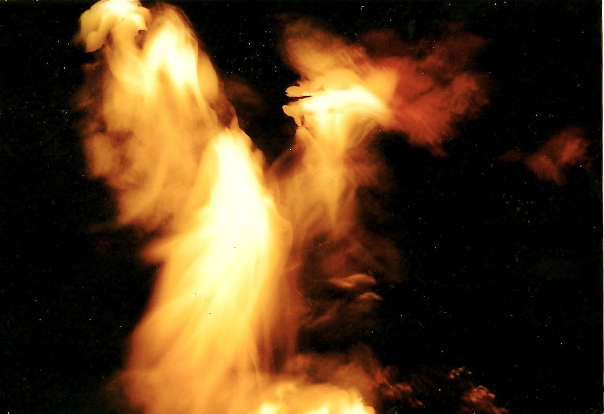

Il tradire degli eventi

Donne e religione. Lo Stato Islamico tra comunicazione e realtà. Gli Yazidi da prima della creazione ad oggi. Nubi luminose, presenza divina e tre monoteismi. Veli e ombre in Averroè e Giordano Bruno. Delillo e l’attimo prima del crollo. Breve vita del dirottatore Mohammed Atta. La lunga giornata del presidente Bush. Io, l’11 settembre e le donne. Pluralità e attualità dell’Islam. L’imporsi dell’IS e le macerie. Coalizioni e contrapposizioni. L’Islam e Roma. Il Graal e la Kaaba. Relatività e inesauribilità della conoscenza simbolica. Sultani in esilio tra Oriente e Occidente.
1. La verità velata
Infibulare significa asportare clitoride, piccole labbra e parte delle grandi labbra vaginali, quindi cucire la vulva residua lasciandole le funzioni esclusive di organo escretore. Questa mutilazione della sessualità si ripercuote sul feto che, non ricevendo ossigeno dalla placenta, rischia danni neurologici; è anche possibile la rottura dell’utero durante il parto, con pericoli di morte per la donna e il bambino. Diffusa soprattutto nei paesi africani a prevalenza islamica, quali Egitto, Senegal, Guinea, Kenya, Nigeria, e nel Corno d’Africa (in Somalia, Eritrea ed Etiopia può essere praticata anche dai cristiani copti), questa aberrante pratica risale a culture antropologiche precedenti ai monoteismi.1
Presso i sunniti è considerato come facoltativo l’aspetto “leggero” di circoncisione della clitoride, detta anche escissione (khafd), espressamente nominato in un Hadit (sentenza) di Maometto (Abu Dawud - 5271, riportata da al-Tabarani in al-Awsat, e da al-Bayhaqi in al-Shu’ab). In maniera analoga a quanto avviene per la circoncisione maschile, si propone di rafforzare gli aspetti dell’identità di genere permettendo il controllo della libido e un maggiore equilibrio psicofisico. Il taglio di una piccola parte della clitoride, nominata in alcune fatwe come “cresta di gallo”, è obbligatorio (fard) per la scuola giuridica shafiita (metodologica e accurata), mentre per quelle hanafita (ad orientamento evoluzionista), màlikita (rigida e ortodossa) e hanbalita (integralista e censoria) è soltanto raccomandato.2 Per quanto possa essere reputata salutare, l’escissione non è prescritta dal Corano, nel quale peraltro non è in nessun modo ammessa l’interdizione del piacere sessuale femminile, mentre l’infibulazione è considerata dall’Islam peccato grave ed è quindi proibita.3
L’infibulazione di massa sarebbe stata ordinata nello Stato Islamico (IS, già ISIL con riferimento al Levante, ISIS in quanto agganciato a Siria e Iraq - dove come Aqi la formazione era attiva già dal 2004)4 dal “califfo invisibile” Abu Bakr al-Baghdadi coinvolgendo soprattutto la zona siriana di Aleppo:5 tuttavia, la voce risulta falsa e riciclata,6 e inoltre estranea a Mosul e all’area irachena.7 L’IS dal giugno 2014 diffonde a livello mondiale l’idea di uno stato islamico estendendosi clandestinamente tra sud della Siria e nord dell’Iraq, in contrasto con diverse formazioni politiche e insurrezionali di questi già disastrati paesi ma riallocando alcuni militari di lungo corso, con un numero di aderenti stimato tra 15.0008 a più di 30.000 unità, compresi circa 3.000 occidentali non manifesti e ben protetti dai loro passaporti.9
L’IS guadagna visibilità anche grazie a spettacolari decapitazioni di giornalisti, attivisti e turisti di ogni nazionalità, delle quali effettua diligenti riprese diffuse via Internet, altrettanto accuratamente rimosse dai gestori dei server; le decapitazioni nel Medio Oriente non sono una novità, e qualcuno sostiene pure che i video potrebbero essere dei falsi,10 mettendo così in dubbio la credibilità di chi sembra aver fatto della ferocia e della sua gestione una precisa strategia, come espresso già dal 2004 da un manuale scritto da tale Abu Bakr Naji, che non manca di nominare la pace a sproposito e piuttosto indicativo del trionfalismo integralista.11 A detta dell’ex agente Cia Snowden, il califfo è stato formato nelle sue competenze militari e comunicative dal Mossad israeliano, mentre l’azione complessiva corrisponde ad una strategia di destabilizzazione, coordinata dalle intelligence americane e inglesi, che tende a creare una zona d’alta instabilità capace di attirare il maggior numero di estremisti possibili; la notizia potrebbe trovare riscontro nella fatto che il “nido di vespe” è reale, ma è priva di documenti di supporto e pretende di spiegare troppe cose senza entrare nei dettagli.12
Al Baghdadi riprende il nome dal primo califfo Abu Bakr, regnante dal 632 al 634, ad uso di un brand senza limiti territoriali che pretende di organizzare statalmente anche forze di diversa provenienza, come testimonia l’ostentato accento cockney con cui colui che i media hanno soprannonimato Jihadi John scandisce i proclami che accompagnano le esecuzioni.13 Eppure, per quanto possa sembrare paradossale e forse anche capace di provocare invidie, dietro l’immagine truculenta e grottesca l’IS è l’unica formazione che ha un progetto per un territorio irrimediabilmente devastato da troppe guerre, e risulta piuttosto attento al pagamento degli stipendi, alla distribuzione di servizi, alle politiche di welfare e al provvedere al futuro delle nuove generazioni, pur se quasi esclusivamente sul settore bellico.14
Un altro paese piuttosto versato nell’economia di guerra sono gli USA, ma per quanto il presidente Obama stia rinnovando le fome di una retorica bellicista che fece la fortuna e la disgrazia dell’amministrazione Bush jr, i suoi obiettivi sono circoscritti e puntuali, rendendo evidenti tanto le intenzioni di alleggerire le responsabilità dal massacro mediorientale quanto le richieste di collaborazioni con le potenze dell’area e quelle europee.15 Il quadro regionale sembrerebbe definirsi soprattutto nelle tensioni tra Iran e Arabia Saudita i cui riferimenti, piuttosto che nelle divisioni tra sciiti e sunniti, sono nei conflitti tra uno stato moderno, seppur teocratico e rigido, e una monarchia regressiva per quanto finanziariamente aggiornata, l’uno inviso e l’altro alleato degli USA: attualmente, l’IS tiene i due paesi impegnati in un’alleanza temporanea nella quale però ognuno tende a danneggiare nel lungo periodo l’altro.16 La Turchia, il cui rilancio come paese cerniera tra Oriente e Occidente ha conosciuto battute d’arresto su ambedue i fronti, è coinvolta da un ampio movimento di terroristi ai confini con la Siria, gli stessi da trent’anni segnati dal conflitto con il PKK: le manovre di pace con i pashmerga kurdi in funzione anti-IS potrebbe favorire il consolidamento del potere di Erdogan e della sua maggioranza.17
L’avvento dello Stato Islamico complica i conflitti intestini dell’area, influenzati dagli interessi che si concentrano attorno alla Nato, in via di ridefinizione, ai quali si oppongono soprattutto quelli che fanno riferimento alla Russia, implicata anche territorialmente, e al suo vasto sistema di alleanze. In tale contesto, l’azione devastatrice dell’IS potrebbe essere utile a tutti: nessuna parte in gioco gode della fiducia dell’altra, e a complicare la nostra comprensione c’è che, almeno dai tempi di Orwell, manipolare le informazioni è una delle prime linee dei conflitti.18 Con tutte le loro nobili intenzioni, ne sono vittime anche quelli chi si credono anime belle perché non credono mai alle versioni ufficiali, ma soltanto e sempre al loro opposto: tuttavia, prima di trarre qualsiasi conclusione, è sempre doveroso catalogare dati, compiere confronti e ricostruire contesti, tanto nella gestione delle notizie, così come nelle considerazioni culturali, cercando di decodificare i messaggi, da ovunque provengano, con una cura maggiore della facile indignazione. L’azione dell’IS si alimenta delle conseguenze di conflitti che hanno coinvolto numerosi interessi e nell’affastellarsi di disastri e menzogne è necessario mantenere tanto spregiudicatezza, quanto cautela.
Le catastrofi non accadono per caso: questo ammonimento è rivolto a tutti, musulmani e no, dallo scrittore magrebino Tahar Ben Jelloun, che ricorda alcune tappe che hanno portato all’autoproclamazione del califfato. Dall’impiccaggione di Sayd Qobt in Egitto del 1946 alla formazione del socialismo laico del Baath in Iraq e Siria, dal colpo di stato di Gheddafi in Libia del 1969 alla commistione tra tribalismo e terrorismo in tutta l’area, dalla rivoluzione islamica in Iran e l’ascesa dei Taliban in Afghanistan del 1979 alla contrapposizione tra sciiti e sunniti attraverso Hezbollah, dall’islamizzazione della rivolta palestinese, nella quale Hamas è favorito dal premier israeliano Sharon contro Arafat, all’escalation di scelleratezze che porta alla distruzione dei Buddha di Bamiyan da parte talebana nel 2001 e nel 2003 all’invasione americana dell’Iraq con cui l’inferno dell’area diventa perenne. Se esiste all’interno dell’Islam un’idea di jihad akbar, di guerra santa (più propriamente grande), questa ha anche un senso interiore e realizzativo, come hanno spiegato nei secoli diverse scuole mistiche e filosofiche; se oggi ci sono attacchi suicidi e decapitazioni, nessun testo sacro li ha mai motivati o giustificati. Eppure, la minaccia dell’IS è reale, grava sull’intero pianeta e va definitivamente contrastata.19
Gli attacchi dei miliziani dello stato islamico compromettono in modi brutali e definitivi una millenaria convivenza tra etnie e fedi; dopo la persecuzione di minoranze cristiane, curde e yazide, con fughe verso la totale incertezza di centinaia di migliaia di profughi, siano costretti ad assistere anche alla tratta delle schiave a prezzi di 25 dollari, e come consueto la notizia si compone di dati documentabili e falsificazioni grossolane.20 L’estinzione degli Yazidi sarebbe particolarmente penosa, considerando che conservano con cura la presunta discendenza diretta dal primo uomo praticando una rigida esogamia per la quale non sono possibili conversioni o matrimoni interreligiosi. Nel sincretismo yazida sono presenti elementi quali circoncisione, battesimo con acqua, culto del fuoco, metempsicosi che procede fino giudizio finale, e la dottrina si organizza soprattutto attorno al Libro della Rivelazione (in kurdo: Cilwe; in arabo: Al Jilwah), stilato precedentemente della creazione.21 Hanno particolare venerazione per l’Angelo Pavone (in kurdo: Melek Taus; in arabo: Tawuse Melek). il primo dei sette angeli creati da Dio, al quale si ribella rifiutando di inchinarsi agli uomini; le sue lacrime di pentimento ne permettono la reintegrazione come protettore dell’umanità, e una delle forme nelle quali si è manifestato è quella patriarca fondatore Abi Ibn Musafir.22
Nell’Islam, con il quale gli Yazidi nel passato hanno avuto diversi conflitti, l’Angelo Pavone trova una corrispondenza in Îblis, colui che per troppo amore della luce divina non si piega nei confronti di un uomo fatto di fango, venendo così condannato (Corano 17:61-63; 18:50). In assonanza con queste credenze, per quanto la religione yazida non sia abramitica, ci sono anche le leggende ebraiche dell’Aggadah, per le quali Satana, il più grande degli angeli e creato dallo splendore di Dio, è geloso di Adamo fatto di polvere e intrattiene relazioni sessuali con Eva generando Caino, cercando in tutti i modi di distogliere patriarchi e profeti dai loro compiti.23 Il Cristianesimo identifica l’angelo caduto Satana con il serpente dell’Eden, configurandolo come colui che, per costitutiva assenza di amore e verità, inganna gli umani a esaltare se stessi e disprezzare Dio (Luca 10:18; Giovanni 8:44; Apocalisse 20:2). In tale complesso di storie, il povero pavone yazida potrebbe anche non avere tanto torto nel diffidare degli umani, del cui male non è affatto responsabile: forse, più di tutti al mondo, è stato tradito dagli eventi, o dal modo in cui li raccontiamo.
Indipendentemente dalle labili capacità d’ascolto dei nostri contemporanei, le civiltà hanno stabilito i propri percorsi con narrazioni che conducono al presente, attive anche nei suoi snodi problematici. Il Corano, il cui archetipo celeste è detto Madre del Libro (Corano 13:39; 43:4; 56:77-78; 80:13-16; 85:21-22), riconosce ad entrambi i sessi gli stessi diritti e condizioni per entrare in paradiso; nell’aspetto di relazione l’uomo ha un ruolo sociale quasi esclusivo, ma deve supportare tutte le spese familiari e alla donna non è dovuto nemmeno lo svolgimento delle faccende domestiche; la donna è subordinata all’uomo così come lui lo è a Dio, ma dispone integralmente del proprio patrimonio. La sessualità è subordinata al matrimonio e vincolata dai modi dalla Sharia, e in tale quadro è ampiamente celebrata. Nelle diversificazioni della cultura islamica, a Minangkabau (Sumatra Occidentale) si registra anche l’esistenza di una società a dominazione femminile;24 inoltre, anche chi si fa propugnatrice dei diritti femminili come Zain Fateh, mette l’accento sulla necessità di conoscere il Corano e distinguersi dal modello occidentale secolarizzato.25
L’usanza del velo pur se non propriamente prescritta ricorre comunque nel Corano con l’idea di velare le «parti belle» (Corano 24: 31) e appartiene, in genere, ai costumi meridionali, non soltanto islamici e non esclusivamente arabi. In Turchia, che esprime una società religiosa in uno stato laico, esistono donne occidentalizzate che ne prescindono, ma poiché negli uffici pubblici è stato a lungo vietato, alcune lo considerano simbolo d’appartenenza ed emancipazione. Per Nilüfer Göle, docente di sociologia a Parigi, il velo indossato dalle ragazze musulmane ne rappresenta la specificità culturale e religiosa, e addirittura può farle sentire più vicine alle proprie coetanee occidentali che alle loro madri.26
In Iran, d’osservanza sciita, dove si accompagnano teocrazia e repubblica, il velo è imposto ad una popolazione femminile dalla vasta rappresentanza parlamentare, ma con pochi diritti. Per Reza Aslan, docente all’Università di Scienze islamiche in California, il velo, quale simbolo patriarcale che contrassegna la proprietà della donna da parte del marito, è fuorviante quanto la sua immagine postmoderna di resistenza contro l’egemonia occidentale. Il velo è semplicemente quello che decidono di vederci le donne musulmane, il cui ruolo sociale è conquistato partecipando, dopo secoli d’emarginazione, all’esegesi del Corano.27
Un volto velato indica un carattere di differimento, riproducendo un’idea che non riguarda tanto l’occultamento della luce e caratteristiche di impurità, quanto l’aspetto di tenebra celeste unita alla luce divina, la cui reciproca implicazione è metafora dell’unità. La compresenza di nube e divinità è nomina anche un Hadit: «L’inviato di Allah rispose ad una persona che gli chiedeva dove fosse il Signore prima di creare il creato: in una nube oscura sopra la quale non v’è aria e sotto la quale non v’è aria»; nel Corano è scritto «Egli si voltò verso il Cielo quando era fumo, e verso la Terra, dicendo loro: “Venite, di buon grado o per forza”» (Corano 40:11). Per il sufi ‘Abd al Karim al-Jili (1366-1403) l’immagine allude alla continuità della creazione: «Egli Si trovava in una nube oscura prima di creare il creato e così rimane dopo averlo creato»28;l’uomo che accede all’integralità realizza le proprie possibilità trascendenti e diviene universale (al-Insân al-Kâmil);29 giurando fedeltà a Dio sotto l’Albero della Vita gli uomini sono ricompensati dalla Pace e dalla Vittoria della Sakîna, nella quale si esprime la presenza immanente della grazia divina (Corano 48:18).
Nell’Ebraismo sussiste una comunità di base tra uomini e donne, entrambi “esseri umani” creati ad immagine di Dio (Genesi 1:27): non c’è idealizzazione del maschile e del femminile, gli aspetti matriarcali si mantengono nella matrilinearità dell’appartenenza religiosa, il femminismo non ha espresso contrasti con la tradizione, e le esclusioni pretese dagli ultraortodossi non sono rappresentative della generalità della cultura ebraica. La presenza di Dio si esprime dove «nube era tenebrosa per gli uni, mentre per gli altri illuminava la notte» (Esodo 14:19-21). che, accompagnata dall’Angelo di Dio, rispetto all’accampamento cambia di posizione, e quindi separa le acque del Mar Rosso; da tale passaggio derivano i 72 Santi Nomi angelici alla base della Cabala, dei quali ognuno rappresenta un “soffio” che unisce al Nome indicibile di Dio, nonché il suo contrario, il cui inganno separa dall’unità a cui tendere.
L’immanenza della presenza divina è rappresentata dalle immagini di nube e velo poste sopra l’arca del patto dell’alleanza, custodita tra i due cherubini (Levitico 16:11-17); il tentativo di penetrarne il mistero in modi illegittimi può condurre alla morte, come accade a Nadac e Abiu, i due figli di Aronne che accendono un fuoco non loro ordinato (Levitico 10:1-2). Per la Cabala la luce si nasconde nella tenebra internamente alla Shekinah, l’ultima delle Sefiroth, le sfere di cui si compone la creazione; come Dio simbolicamente è il Sole e la Luna è sua presenza,30 è la Shekinah a indicare, ad un tempo, la presenza divina e l’aspetto femminile della divinità.
La Shekinah è descritta metaforicamente quale nube e, così come nell’Islam, questa non riguarda la connotazione negativa e oscura dell’impurità, ma indica l’apparire immanente di Dio. La sua natura e l’origine increata segnano l’identità di Dio con la presenza, nella quale egli si rivela affermandosi come coesistenza di luce e tenebra. Nel Libro Fulgido (XII sec.) l’ottava sfera corrisponde al giorno di vita nel quale l’uomo deve essere circonciso, la nona e la decima equivalgono alla Shekinah celeste e terrena, la Luce che emana dalla Sapienza, e quindi alla donna a cui l’uomo si unisce come una sola carne e grazie alla quale esiste il mondo.31 Racconta il cabalista chassidico Nachman di Breslav (1772-1810) che, dopo il peccato di Adamo, questa luce è in esilio per le contrade dell’universo, sotto forma di scintille, nascosta nell’ombra che fa da schermo alla luce.32 Per il Libro della Figura (XIII sec.), alla fine dei tempi, nel sabato in cui non sarà né giorno né notte, il primo uomo e la presenza divina verranno riunificati e tutto sparirà.33
Dopo la diaspora, la Shekinah è, come Israele, sparsa su tutte le terre: è ovunque, anche nel cuore dei gentili, occorre cercarla persino nella tenebra e nel male, abissi nei quali gettarsi per liberare le luci nascostevi da Dio. Questo fu compreso in modo particolare dai chassid, diffusi soprattutto in Polonia. Questa luce, rapita, calunniata e sottoposta a tutte le debolezze umane, splende sempre in trionfo.34
Pietro Citati ha suggestivamente affermato che Bibbia e Corano suonano una stessa musica, orchestrata diversamente. Occorre però anche riconoscere i modi diversi con cui un tema è eseguito, nonché le dissonanze che sussistono tra un passaggio e l’altro. E come una fiaba che non smette mai di essere narrata, tale musica è sottoposta a continue variazioni; e così, nel Cristianesimo il concetto di Shekinah si ritrova, con diversa configurazione, in quello di Parusia, che indica la pienezza della presenza divina in Cristo: questa presenza è storica in seguito all’incarnazione, «come il lampo esce dal levante e si mostra nel ponente» (Matteo 24:27), ed è escatologica nel Giorno del giudizio, che «verrà come ladro nella notte» (1Tessalonicesi 5:3). presenza posta accanto a se stessa e la cui imminenza è sospesa nella tensione inesauribile tra il già e il non ancora.35 In tale quadro dottrinario, il racconto della Genesi viene letto considerando l’umano come costituito da uomo e donna insieme, e San Paolo ne rimarca il destino ad unirsi in una sola carne (Efesini 5:22-24). Gli aspetti del femminile vengono reintegrati nel divino attraverso la figura della Vergine Maria, e la sessualità viene regolamentata in termini sociali e di relazione, per cui l’esclusione delle donne dal sacerdozio e loro subordinazione sociale si accompagnano a idealizzazioni del femminile e a forme di ginecocracrazia tanto diffuse quanto differenziate.
Nei miti del Cristianesimo gnostico presenza e pienezza divina si associano nella vicenda di una donna sottoposta a violenza e di una luce costretta a pervertirsi: la Pistis Sophia (II sec. d.C.) narra le vicende delle anime precipitate, degne di risalita possibile oppure destinate a perpetuare i tormenti; a volte, si può cadere per troppo amore e il tendere alla luce può confondersi con l’ottenebramento.
«Guardai, o luce, alle parti inferiori e vidi una luce: pensai: voglio recarmi in quel luogo a prendere quella luce. Andai, e mi trovai nelle tenebre del caos inferiore». Il lamento di una sapienza caduta vittima dell’«Arrogante» ancora parla alla nostra umanità confusa, e un «grande splendore» misto a «densissima oscurità» si rivela negli «arconti del destino» presenti nel tredicesimo eone, che indicano fine del tempo e compimento dell’«eredità della luce», legate alla rinuncia della «notte del mondo degli uomini».36 Conoscere se stessi è un processo difficile e penoso: non basta la parola, occorre anche perdersi.
Nel Cattolicesimo il tema della «tenebra luminosissima», legato alle preoccupazioni di vedere e conoscere oltre la visione e la conoscenza ordinarie, attraversa il De vita Moysis (IV sec.) di Gregorio di Nissa e la Kephalaia Gnostica (IV sec.) di Evagrio Pontico, approda nel De Mystica Theologia (V sec.) di Dionigi l’Aereopagita, per il quale la non-conoscenza sorpassa ogni intelligenza, e riemerge con l’oscurità che purifica l’anima per dischiuderla alla luce della «notte oscura» di cui parla San Giovanni della Croce (1542-1591), conferendo una componente elettiva anche agli stati d’angoscia. In Oriente, lo Zhuangzi (IV-III sec. a.C.) taoista nomina la «conoscenza del non conoscere» indicando l’ignoranza quale sapere supremo, mentre il Tantra nel Kunjed Gyalpo (XVI sec.) si riferisce al «vedere che non c’è nulla da vedere».37 In modi che gli orientalismi e la new age non permettono di comprendere, anche la mistica è amore di sapienza.
In Occidente, dal V sec. a.C. il non sapere socratico apre le porte alla conoscenza razionale, dalla quale sorgono filosofia e scienza, il vedere cose che sono idee, l’afferrarle attraverso il concetto, il disporle nelle forme della conoscenza discorsiva. Nel XX sec. Heidegger, erede della ricezione tedesca della sapienza ellenica, recupera alla realtà rappresentata una verità quale “non nascondimento” (in greco aletheia) per la quale il mondo è luogo di un Essere che splende nella tenebra. Tra questi punti estremi, il discorso assume numerose pieghe.
Pienamente aristotelico e autenticamente musulmano, nel medioevo andaluso Averroè attinge ad un razionalismo non limitato alle attività dell’intelletto. La conoscenza massima è quella di Dio, tutto procede da lui: la nostra è imperfetta, sempre successiva alla cosa conosciuta.38 Un’unica verità si presenta differentemente, ma in modo non contraddittorio, su diversi piani di comprensione. Indagando la conformità della filosofia al Corano e alla Sharia, quindi se sia lecita, proibita oppure obbligatoria,39 Averroè stabilisce che è lecita solo per i sapienti: per la maggior parte degli uomini è sufficiente aderire al senso letterale dei testi sacri, validi per tutti.40 Tuttavia, contro ogni dogmatismo e autoritarismo, allo studioso è permesso persino sbagliare, nessuno può impedire a qualcuno di prendersi cura della propria formazione.41 In una scena del film Il destino (1997) di Youssef Chanine, il filosofo prende un libro scampato alla distruzione delle sue opere decretate dagli integralisti dell’epoca, gli Almohadi, e lo lancia tra le fiamme, affermando: «Il pensiero ha le ali, e nessuno può impedirgli di volare».
Gli fanno eco le parole pronunciate sul rogo da Giordano Bruno e riportate nel film (1973) di Giuliano Montaldo: «Tremate più voi giudici nel proferire la sentenza che non io nell’ascoltarla.» In modi lontani da ogni ortodossia, tra i tempi antichi e quelli moderni, Bruno aveva affermato che le religioni rivelate sono contronatura e intrise di superstizione, pur se socialmente utili in quanto sanno tenere a freno gente incolta e «rozzi popoli». Il suo pensiero riconosce la connessione del reale e il carattere mediato della conoscenza: nelle forme materiali, che hanno carattere composito e sono il lascito di un’ombra sempre sul punto di tornare sulla terra, la luce non cancella mai del tutto le tenebre. Segnala Roberto Esposito che la filosofia di Bruno è aperta ad ogni sperimentazione stilistica e testimonia una cultura ancora cattolica in quanto universalista ma ormai non esclusivamente cristiana, una forma mentale già scientifica seppur lontana dall’appiattimento meccanicista, ancora ricca di sviluppi possibili, così come l’universo che descrive si compone d’infiniti mondi.42
Una nube di luce e tenebra sembrerebbe ritrovarsi anche nei primi tre minuti dell’universo. La moderna cosmologia suppone la presenza di una sostanza gassosa e densa, miscuglio indifferenziato di materia e radiazione in equilibrio termico perfetto, in rapida espansione in ogni punto. Il progressivo raffreddamento di questa sostanza porta alla formazione di nuclei stabili che, unendosi agli elettroni, permettono gli atomi. Quindi, la materia si libera dalla radiazione rilasciando come residuo l’elio che ancora prevale nell’universo, strutturando le stelle che ancora scaldano mondi. Tuttavia, questo convincente racconto non può prescindere dal valutare le proprie condizioni di possibilità: l’addensamento omogeneo di fotoni ed entropia oggi riscontrabile potrebbe quindi conseguire da condizioni iniziali e da uno stato generale completamente opposti rispetto all’eterogeneità e all’isotropia che ci permetto di supporre le osservazioni compiute nella nostra regione di universo.43 La scienza, per essere tale, deve ammettere che non tutto è osservabile e che quanto lo è non sempre comprova qualche ipotesi, e certamente è difficile ricostruire quella manciata di righe scarabocchiate che precedono quanto chiamiamo creazione. La verità, come la bellezza, gioca spesso con i suoi veli.
Per Averroè rivelazione religiosa e ricerca filosofica sono distinte, ma convergono: la religione conduce alla saggezza (hikmat) attraverso modi condivisibili da tutti gli uomini, mentre la filosofia (falsafah) riserva le sue «felicità» ai pochi che possono comprenderla e praticarla.44 Se la scienza divina è unica in entrambi i modi di conoscenza, la filosofia riguarda, in maniera piuttosto aristotelica, «la conoscenza dell’esistente in quanto tale».45 Henry Corbin precisa che l’intelletto umano, per poter percepire Dio, definito quale l’intelletto agente, deve divenire intelletto in atto; in questa unione, l’intelletto agente percepisce se stesso particolarizzandosi momentaneamente in un’anima umana: in ogni atto umano di conoscenza, Dio ogni volta conosce se stesso.46 La «doppia verità» è pertanto una teoria che non appartiene al suo pensiero, per cui ogni conoscenza individuale è vera soltanto quando le immagini dei sensi sono rese intellegibili dall’intelletto divino separato. Afferma Borges che Averroè, chiuso nell’ambito dell’Islam, mai conobbe il significato di tragedia e di commedia:47 noi, mentre il fanatismo continua a funestare ogni sponda e fin troppo coinvolti da tragedie e commedie, possiamo forse semplicemente chiederci quanto il volo del pensiero possa, anche impercettibilmente, essere avvistato, pur se soltanto nelle sue immagini o nelle sue ombre.
Bruno considera che nella mente non possediamo le idee, ma le loro ombre, il conoscere procede da queste e ne varca di continuo la soglia. Il suo primo testo De umbris Idearum (1582) presenta una complessa sistematica, ancorata nelle sacre scritture e coerente con la logica a base alfabetica lulliana, ma già tipica di Bruno. All’ombra dell’albero della scienza, l’uomo ottiene cognizione del vero e del falso, le forme sono ombre, l’intelligenza è lume, il mondo non è del tutto oscuro, ma «repentina luce» acceca gli occhi, ben aperti in chi conosce. Tenebra e luce sono tracce del vero e del falso, partecipi di ambedue: l’ombra è «o traccia di tenebra nella luce, o traccia di luce nella tenebra, o composto di luce e tenebra». Nelle ombre è cercata l’impronta delle idee per distinguere una bellezza sempre accompagnata a varietà e per ricondurla così ad unità, ogni diversità con cui la natura giunge alla luce chiede di essere scelta nei suoi specifici aspetti.48 Un sinonimo del verbo scegliere è decidere, il cui significato è tagliare: quanto diviene reale precipita da un taglio che non è quello di un bisturi e non può essere cauterizzato. Ferite e crolli che segnano ogni vita chiedono di essere guariti, ma perché ciò accada occorre riconoscerli. Eppure, spesso rifiutiamo le opportunità offerte dal travaglio del mondo.
2. Raccontare il crollo
L’oscura iridescenza di una nuvola di fumo e polveri ha sovrastato le Torri Gemelle di New York nel giorno del loro crollo. Nel dicembre 2001, uno dei primi scrittori a prendere la parola dopo tale immensa ferita e a rispondere a quelle che lui stesso chiama «le rovine del futuro» è Don Delillo.49 Se le Torri Gemelle rappresentavano la possibilità di raggiungere ogni limite, teorico e tecnologico, nessuno ha saputo stare al passo con il loro crollo, nemmeno con l’immaginazione. Il gesto terroristico di pochi ha cambiato l’orizzonte trascinandolo indietro nel tempo e nello spazio, raccontando compiutamente il mondo con l’assenza di logica propria dell’apocalisse. La storia già la sapevamo, ma ancora non vogliamo ammetterla e sembra sempre troppo presto per essere compresa; è la storia per la quale mercati e investimenti sono privi di limiti e controlli, le multinazionali hanno più autorevolezza dei governi e la finanza scolpisce le coscienze.
Qui dove siamo, il poco tempo di cui ormai ciascuno dispone è sempre più scarso, compresso e distorto ed è ormai impossibile separare il linguaggio dal mondo che lo provoca, al punto che si crede a tutto oppure a niente con medesima imbecillità e pari stoltezza. Un cambiamento potrebbe però ripartire proprio dalle Torri, laddove sia possibile immaginare il momento di terrore primordiale che disperatamente precede politica, storia, religione. Disertando ogni paragone, l’evento afferma la sua irriducibile singolarità: «C’è qualcosa di vuoto nel cielo. Lo scrittore cerca di dare memoria, tenerezza e senso a tutto quel vuoto urlante.» La democrazia è violentata dalle ingiustizie, il futuro va incontro alla sua fine e lo scrittore si unisce alla preghiera di una donna musulmana.50
Delillo ripercorre le sue motivazioni lucide e non-apocalitttiche di autore visionario e non visivo, che presuppone le immagini dipingendo con il bianco e nero delle parole un mondo ridotto a finzione, trasformato dalla finzione della scrittura.51 Così in Rumore Bianco (1984): «Non dobbiamo aggrapparci artificialmente alla vita, e neanche alla morte. Non si fa altro che procedere verso le porte scorrevoli. Onde e radiazioni. Guarda come è tutto ben illuminato. Questo posto è sigillato, concluso in sé. È senza tempo. (…) Qui non moriamo, facciamo acquisti. Ma la differenza è meno marcata di quanto si creda.»52 Traditi dai nostri giorni giovani e da fiducie troppo semplici, tra un lasciarsi consumare e l’altro, quanto quel giorno cadde continua a cadere e non c’è scampo, se non nella polvere. In un mondo capovolto che gira veloce e inconcludente, il vuoto lasciato dalle Torri è gemello di quel vuoto d’idee di una realtà frammentata che vortica in una fine incapace di finire.
La frammentarietà riguarda anche il comporsi d’ogni giorno tra fiabe e routine, ritagli di giornale e cose che non quadrano. Nel mattino di un giorno che tutti ricordano, nei cieli d’America tra le 07:59 e le 08:42 quattro aerei vengono simultaneamente dirottati da attentatori suicidi. I diciannove sospettati appartengono ai paesi arabi (un egiziano, un libanese, tre degli emirati, quattordici sauditi), sono d’estrazione sociale agiata e hanno lunga esperienza nei paesi occidentali, non provengono da qualche povero assediato villaggio palestinese e nemmeno rappresentano l’Islam in genere. Il ruolo dell’amministrazione americana è stato criticato e quindi imputato di connivenze: quelle locate ai piani alti del mondo finanziario sono ampiamente documentabili, ma questo non equivale a dire con arrogante semplicioneria che a far crollare le Torri siano stati la Cia, il Mossad e Bush in persona.53
Se non siamo così idioti da identificare le informazioni con i fatti, non dovremmo faticare troppo ad ammettere la parzialità di tutto ciò che sappiamo, nonostante facili e false certezze possano abbagliare, portando a strutturare eventi ingannevoli, lacunosi e contraddittori nella narrativa di seconda scelta delle news. Il problema è che nelle nostre infinite mille e una notte, troppi veli impediscono di comprendere chi sia davvero Sherazade, la narratrice infinità: costei è forse dietro il profilo di Mohammed Atta, il presunto capo del dirottatori e pilota del volo 11 (il primo, che raggiunge la Torre Sud), oppure si nasconde nella pieghe della giornata del presidente Usa Bush jr?
Mohamed Atta nasce nel 1968 in Egitto da genitori d’origini saudite.54 Arriva in Florida dal maggio 2000 con l’inseparabile “cugino” Marwan Al Sherhri, che a sua volta si schianterà con il volo 175 sulla la Torre Nord. Atta nel 1999 ad Amburgo consegue una laurea in architettura e pianificazione urbana, occupandosi anche durante soggiorni di studio del paesaggio urbano di Aleppo; si distingue per serietà intellettuale, e nella sua tesi critica l’influsso occidentale sulla città mediorientale.55 Colleghi e docenti lo ricordano come interessato alla convivenza tra etnie e fortemente critico nei confronti del regime di Mubarak, della persecuzione verso i palestinesi e del progresso occidentale.56 Nel documento della commissione finale, diventa antisemita e antiamericano, con forti riserve anche verso l’Iraq di Saddam Hussein; l’inizio del suo integralismo terrorista viene fatto coincidere con il pellegrinaggio alla Mecca (hajji) del 1994.57 Le varie narrazioni sono discordi su diversi dettagli.
Secondo l’ufficio di Polizia Criminale tedesco, vive per un periodo a Bakoti, 8 chilometri da Maglaj, Bosnia centrale; secondo alcuni testimoni al processo contro Milosevich è nel conflitto jugoslavo che matura la sua svolta jihadista, influenzato dallo yemenita Ramzi Binalshibh.58 Una sua presunta partecipazione ad un attentato contro un autobus israeliano a Gerusalemme è smentita dal generale di brigata David Tsur come caso di omonimia.59 A detta di versioni fornite dalle intelligence americane e tedesche l’affiliazione ad Al Qaeda avviene nel 1999: mentre si reca in Cecenia per combattere i russi, lui e altri integralisti sono condotti in Afghanistan.60 Altre fonti riportano che è lui a radunare gli altri futuri piloti della morte, chiedendo aiuto a Bin Laden soltanto in seguito.61
Gli inseparabili Atta e Al Sherhri si esercitano con simulatori di volo per il Boeing 721 in Florida, al Sim Center di Palaka, risultando “un po’ timidi”;62 in seguito, frequentano la Huffman Aviation di Venice, una delle due scuole di volo nelle quali sembrerebbero aver preso le loro qualifiche tutti i dirottatori piloti, da poco acquisita dall’olandese Rudi Dekkers, che pur se sprovvisto di esperienza nel settore la lancia a livello internazionale, fornendo persino i moduli per l’immigrazione.63 Il 23 agosto il Mossad consegna il suo nome alla CIA insieme a quelli di altri diciotto presunti terroristi in procinto di compiere un attentato; il suo è uno dei quattro dati per certi, ma la lista non viene presa in seria considerazione.64
In preparazione dell’attentato, i due cugini percorrono tra il 6 agosto e il 9 settembre più di 3.200 miglia spingendosi oltre le destinazioni ovvie e opportune con macchine prese a noleggio all’agenzia Warrick di Pompano Beach, Florida, comportandosi da perfetti clienti65 e riconsegnando regolarmente le vetture.66 L’8 settembre i due più un terzo, in giro per l’America, si fermano ad un bar di Hollywood a bere alcolici e giocare ai videogame; Atta si lamenta per il conto, ostentando la qualifica di “pilota delle American Airlines”, e dentro al viene smarrita una copia del Corano.67
Sempre l’8 settembre, Atta risulta essere anche a Laurel, nel Maryland, dove invia a Dubai, attraverso il Western Union di un Giant Food, 5.000 dollari a Mustafa Muhammad Ahmad, esponente di Al Qaeda.68 Inoltre, un finanziamento di centomila dollari viene spedito ad Atta dal Pakistan da parte del capo dell’intelligence pakistana ISI (Inter Services Intelligences) Mohammed Ahmad attraverso lo sceicco terrorista Ahmad Umar.69 Il 9 settembre Atta vola a Boston.70 Anche altre piste vedono lui e gli altri presunti kamikaze ubriacarsi nei bar e lasciarsi andare in comportamenti tipici del disprezzato mondo degli infedeli.
Alle 07:59 da Boston (con 14 minuti di ritardo) parte il Boeing 767 del volo American Airlines 11; l’hostess Madeline Amy Sweeney comunica al responsabile dei servizi di volo che quattro dirottatori hanno ucciso due assistenti, hanno tagliato la gola ad un passeggero e sono entrati nella cabina; la telefonata si interrompe quando sono avvistati «acqua e palazzi».71 A tale testimonianza si aggiunge, con alcune varianti relative ai sedili occupati dai quattro dirottatori (cinque per l’FBI), quella della hostess Betty Ong, che alle 08:27 riferisce alla compagnia che un passeggero e due assistenti sono stati pugnalati mentre un terzo respira con l’ossigeno.72 Il volo procede verso il mare e i palazzi e, tra le preghiere che dedica a tutti noi, Betty ormai sa di essere morta.73 Il primo schianto sul World Trade Center è alle ore 08:46:26.
Una borsa appartenuta ad Atta e lasciata nel baule della macchina, rivela al suo interno un passaporto saudita, una patente di guida internazionale, una copia del Corano, una cassetta di tipo religioso, una videocassetta su come si pilotano i 757 e i 747,74 nonché una sorta di testamento in arabo in cinque pagine, del quale copie autografe vengono ritrovate anche in altre circostanze legate agli attentati, come il parcheggio dell’aeroporto di Dulles o tra i relitti del volo 93.75 Le cinque pagine dell’opuscolo in arabo porterebbero la rivelazione della missione suicida: «ricorda tutte le cose che Dio ha promesso ai martiri.»76 Seguendo tale narrazione, potrebbe essere stato anche l’ultimo pensiero di Atta prima dell’impatto.
Restituiamo prospettiva e proporzione a tutto ciò: qualsiasi cosa significhi verità, non tutte le storie possono essere vere. Il giornalista investigativo ed ex agente CIA Ruppert evidenzia che, se informazioni e messaggi sembrano alquanto dubbi, le circostanze dei ritrovamenti sono piuttosto ambigue.77 Da parte sua la FBI nota che la scatola nera dell’aereo non poteva più fornire informazioni, in quanto danneggiata dalle fiamme.78 Ad ogni modo, il 12 settembre, giorno successivo agli attentati, in maniera a dir poco sorprendente Atta risulta in vacanza sul Mediterraneo, e telefona a suo padre, che sembra così voler scagionare il figlio da ogni ipotesi accusatoria.79 Ennesimo colpo di scena, nel luglio 2005 il padre di Atta afferma dimostra di approvare gli attentati di New York epure quelli di Londra, «inizio di una guerra religiosa che durerà cinquant’anni e che vedrà molti combattenti come suo figlio».80
Incontriamo un altro grande protagonista di quel giorno. Il presidente Bush jr inizia la giornata con due giri di jogging in un campo di golf, quattro miglia e mezzo; si trova a Longboat Key, in Florida, stato retto per un mezzo miracolo elettorale mai chiarito dal fratello Jab.81 Esce dall’hotel, seguito da addetti ai servizi segreti e alla sicurezza, costantemente informati. Andrew Card, capo dello staff, gli dice qualcosa in un orecchio; un reporter gli chiede se sa cosa sta accadendo a New York, lui risponde affermativamente, aggiungendo che dopo avrebbe «sarebbe tornato sull’argomento».82 È il suo momento di terrore, proprio prima dell’impatto: di fatto, deve affrontare dei bambini, e mica è cosa facile.
Alle 08:46 circa, mentre il corteo di automobili presidenziali è in movimento, la telefonata di un collega avvisa la reporter Sonya Ross del primo schianto.83 Nello stesso momento, mentre tutto il mondo è a conoscenza dell’accaduto e centinaia di persone cercano salvezza dalle Torri in fiamme gettandosi nel vuoto, Bush Junior è nel salone della scuola elementare Emma E. Booker di Sarasota a promuovere le politiche educative dell’amministrazione.84 Si mette in posa per la foto con insegnanti e studenti, in aula sono presenti stampa e televisione, che compie parziali riprese.85 Passando in un’altra sala, accompagnato dal Segretario all’istruzione Ron Paige e dal vicegovernatore della Florida Frank Bogam, il capo dello staff Card gli comunica qualcosa rispetto al volo 11.86
Un attimo dopo l’attacco alla Torre Nord, gli fornisce notizia dell’accaduto il vice-capo dello Staff presidenziale Karl Rove; mentre sosta in una sala privata, il Consigliere per la Sicurezza Nazionale Condoleeza Rice lo informa di un «terribile incidente».87 Mesi dopo, durante una convention di cristiani evangelisti ad Orlando, rispondendo alle domande di un ragazzo di nome Jordan, il presidente si prende più di una licenza su fatti che già l’informazione non ha mai trasmesso nello stesso modo; racconta di aver visto in televisione la scena del primo schianto (proprio quella non trasmessa in diretta) commentando: «Quel pilota è davvero terribile!»,e scopriamo anche che una delle sue prime reazioni fu quella di «allertare le forze armate».88
Alle 09:00 il presidente è con diciotto bambini del secondo grado ad ascoltare una favola su una capretta. Si congratula delle loro capacità di lettura e li interrompe dicendo: «Ma questa deve essere la sesta elementare!»89 Alle 09:05, due minuti dopo il secondo attacco al WTC, Andrew Card, sussurra all’orecchio di Bush dell’avvenuto schianto del secondo aereo, e che «l’America è sotto attacco». Il presidente «si rabbuia per qualche istante».90 La situazione è drammatica. Lui è l’unico che può dare estremamente ordini decisivi quanto difficilissimi, come quelli di abbattere un aereo civile.
Anche l’Air Force One, l’aereo presidenziale, si configura come bersaglio: lo afferma una telefonata ricevuta alle 09:00 dalla Casa Bianca, in seguito smentita.91 Lo stesso pomeriggio la notizia è confermata dal Procuratore Generale John Aschroft,92 dall’addetto stampa della Casa Bianca Ari Fleisher, che utilizza anche la frase in codice «Angel is next»93 e dallo stratega politico di Bush e azionista Enron Karl Rove, che paventa da parte dei terroristi una conoscenza accurata delle abitudini del presidente.94 Basandosi sul dato che il nome in codice dell’aereo viene cambiato ogni giorno e su alcune informazioni fornite dalla intelligence israeliana, lo storico Webster Griffin Tarpley riconduce il messaggio all’ultimatum della fazione golpista dell’apparato statale e governativo statunitense e responsabile anche dell’attentato di Okhlaoma, che avrebbe così imposto le proprie politiche.95
Bush non sembra fronteggiare la situazione in nessun modo. Non lascia la scuola, non la fa evacuare, non la fa proteggere, non interviene per assicurarsi che l’aeronautica militare svolga il proprio compito, non convoca una riunione di emergenza, non si consulta con nessuno. Non menziona nemmeno gli eventi di New York, ignora le richieste dei servizi segreti, continua ad ascoltare deliziato i bambini leggere la fiaba della capretta. Non sembra preoccupato.96 Per un militare esperto come Stan Goff, il fatto che mentre accade un «evento senza precedenti» il presidente perseveri in disarmanti banalità fornisce la netta impressione che la versione ufficiale sia «una storia costruita» dal governo.97
Alle 09:06 Washington trasmette a tutte le strutture del traffico aereo nazionale del sospettato dirottamento del volo 11, informando d’emergenza il Pentagono, mentre alla stessa ora il Dipartimento di Polizia di New York trasmette: «È stato un attacco terroristico. Avvertite il Pentagono».98 Alle 09:25 il Centro FAA di Herndon proclama il divieto totale di decollo per qualsiasi aereo su tutto il territorio nazionale, mentre agli aerei in volo è permesso di seguire regolarmente la loro tabella di marcia. Alle 09.30, l’aereo è a dieci minuti dal suo obiettivo, il coordinatore nazionale per la sicurezza e l’antiterrorismo Richard Clarke ordina la chiusura immediata di tutte le ambasciate statunitensi nel mondo, l’innalzamento del livello di allerta in tutte le basi militari, l’immediato imbarco del Presidente Bush sull’Air Force One.99
Alle 09.30 stesse, il presidente convoca presso la biblioteca della scuola di Sarasota una breve conferenza stampa, a cui assistono circa 200 persone. Dichiara: «Questo è un momento difficile per l’America» e «il terrorismo non avrà la meglio sulla nostra nazione»; conclude dicendo che tornerà immediatamente a Washington e chiede: «unitevi a me per un momento di silenzio».100 Soltanto alle 10:00, a bordo del suo aereo personale, avvisa il vicepresidente Cheney e le forze armate; si reca poi alla base di Barkdsale in Luisiana e al comando strategico di Offtut nel Nebraska, rientrando a Washington alle 19:00.101 A detta dell’ex presidente, l’11 settembre ha saputo chiarire il ruolo dell’America e ha dischiuso grandi opportunità.102 Qualsiasi cosa si possa inventare, non tutte le storie possono essere vere.
Da parte mia, pensai ad uno scherzo. L’attimo prima, pensavo ai fatti miei. Non vedo televisione, e così ricevo la notizia da un ufficiale in divisa, come una comunicazione formale in piena regola. Pomeriggio inoltrato, sono sotto casa a Frascati, faccio l’autostop. Passa Marco, un mio amico capitano dell’aeronautica ex-punk: uno di cui ti puoi fidare, quando ci incontriamo succede sempre qualcosa. Si accosta al finestrino biascicando parole sconnesse su aerei e grattacieli. La sintonia della radio cade di continuo. Poche parole tra noi. Un’impotente serietà carica di nobili sentimenti. Il crollo appare incorniciato nello sfondo della cucina di Pasquale, mentre prepara le crêpes alla Nutella ai ragazzini intenti a fare i compiti. Conveniamo che sarebbero stati necessari anni per capire cosa cazzo fosse davvero successo, se qualcosa si fosse arrivati a capire mai. Mi sottopongo quindi ad una severa lezione di tromba per ridimensionarmi dopo tre trionfali giorni di jam session.
A Subaugusta prendo la metro verso l’altra parte di Roma. Tutto normalmente normale, inespressivo, sfuggente: come se le stragi fossero roba di tutti i giorni e infatti è proprio così. Mentre scrivo qualcosa che non sono queste righe, parlo con un tizio, autore di gialli, avvelenato con le case editrici, sicuramente un killer mancato. Quindi arriva notte e qualcosa sembra essere esploso davvero: tipo innamorarsi. È una questione d’odori sottili, d’inattese iridescenze. Neri capelli sul suo viso dipinto: non è un modo di dire, le piaceva dipingersi il volto quasi come fosse un velo, ed era mora suppongo naturale. Siamo a casa, lo schermo resta acceso, in un’altra stanza, tutto continua a cadere a pezzi. Meravigliosi i nostri sessi si uniscono. Come nube. Come lampo. Poi, non siamo durati nemmeno quattro giorni, molto meno di qualsiasi conflitto armato. L’avevo incontrata a villa Mondragone ad un convegno di filosofia monumentale, costoso e inutile; eravamo andati al lago e in giro per osterie, sembrava tutto molto bello. Si chiamava come me. «Sei appiccicoso?» «Soltanto se stiamo troppo vicini.» Questo ci dicemmo, quando le chiesi un appuntamento.
Difficile ricostruire il senso della convivenza globale quando non ci sopportiamo nemmeno da soli.
3. Califfati e crociati
L’Islam non ammette separazione tra sfera temporale e spirituale e ogni riforma deve collocarsi all’interno della tradizione (turath). L’assenza di un secolarismo non esclude l’accettazione del mondo moderno, e piuttosto ne permette la molteplicità, rompendo altresì il monoculturalismo occidentale.103 Questo peraltro risulta costrutto convenzionale laddove furono proprio gli arabi a trasmettere la conoscenza di Aristotele nonché a concepire algebra e alchimia. Delle «scienze degli antichi» (ulum al-awail) l’Islam valorizzò gli aspetti operativi delle conoscenze scientifiche e l’elemento introspettivo del neoplatonismo; ne respinge tanto l’idea di paideia, che ponendo al centro l’uomo e privilegiando lo sviluppo della sua personalità risulta incompatibile con il teocentrismo, ed è in contrasto con gli elementi dualistici tipici dello gnosticismo, che contraddicono la presenza nel mondo del Dio infinitamente misericordioso.
Nell’850 la comunità filosofica dei Puri di Basra, che consideravano Socrate come il più grande saggio dopo Gesù, formula 51 trattati sulla scienza ellenistica da assorbirsi nell’Islam. L’influenza di Aristotele è riscontrabile nei precetti della Poetica applicati da Al Farabi, Avicenna e Averroè, nell’impegno di Ibn al-Mu’tazz sulla Retorica, mentre Al Kindi tenta di conciliarlo con il creazionismo; tuttavia, è proprio il discorso sulla creazione a fare in modo che il mondo necessario ed eterno di Avicenna venga considerato eretico.104
Particolare interese riveste il pensiero di Averroè. Pur ammettendo l’eternità di una materia che contiene modi indeterminati tutte le forme riconosce che l’unico immortale è Dio, esclude che egli abbia emanato il mondo e inserito le realtà ideali nella materia. Dio, definito con terminologia aristotelica intelletto agente, è così garante della conoscibilità del mondo. Il pensiero del filosofo andaluso permette di affrontare la crisi del soggetto conoscente, destituendo le parzialità e le egemonie di visione nascoste nella sua pretesa identificazione con la coscienza ma salvaguardando al contempo le esigenze di metodo critico e intersoggettività.
In tempi a noi vicini, in base ad una lettura rigorosa e originale di Averroè, il filosofo egiziano Mohamed Abed Al Jabri ha affermato l’esigenza e la possibilità di una via islamica alla democrazia, laddove i principi sono presenti nel Corano, negli Hadit e soprattutto nel principio della shurà, “consultazione”, che consente ai musulmani di appropriarsi del presente appellandosi alla propria cultura senza subire importazioni dall’Occidente. Questo pensiero, alla base di alcune tensioni della primavera araba, ancora deve dispiegare i suoi potenziali, e potrebbe coinvolgere un Occidente in piena paralisi a ritrovare la capacità dinamica di rapportarsi ad altro. Invece, a detta di Al Jabri, le difficoltà che riguardano il mondo musulmano vengono da una parte dalla progressiva perdita della dimensione razionale e scientifica, che il pensiero andaluso aveva elaborato sulla base dell’Islam più autentico, e dall’altra dalla connivenza con il potere che ha spesso limitato e corrotto gli intellettuali musulmani, portando alla persecuzione di figure quali lo stesso Averroè, le cui idee verranno divulgato da ebrei e latini con molti frantendimenti.
«La ragione è una lanterna che illumina le tenebre, ma a volte occorre saperla portare anche in pieno giorno»: l’intento del filosofo egiziano è quello di eludere gli oscurantisti misticheggianti più diffusi, e quindi superare le difficoltà politiche della conciliazione tra tradizione e presente stabilitesi in conseguenza del secolare dominio di califfi e sultani. Questi già con gli Ommayadi tendevano a sostituirsi a Dio sacralizzando la propria autorità; con il colonialismo e le dittature del XX secolo tale situazione peggiora, produce immobilismo e stasi politica e aggrava la stessa fuorviante mitologia del califfato.105 Averroè ci permette di formulare un pensiero critico in quanto non fornisce legittimazioni filosofiche del potere: piuttosto, è interessato a garantirne l’accesso ai sapienti, depositari esclusivi della filosofia non per elitarismo ma piuttsoto per evitare che essa degradi.106 In maniera esattamente opposta, richiamandosi in modi tirannici al califfato e ritenendosi depositari di ogni sapienza a prescindere da qualsiasi teoria, oggi nella capitale Raqqa l’IS stila le regole del curriculum islamicamente corretto, proibendo l’insegnamento di filosofia e chimica, vietando così tanto il distinguere quanto il mescolare.107
Con la presa di Falluja, la formazione integralista si è dimostrata capace di organizzazione militare, e se è in conflitto con altri gruppi ribelli in Siria quali il Fronte Al Nusra,108 conserva qualcosa dell’assenza di discriminazione etnica propria all’Islam nel gran numero di occidentali arruolati. I britannici potrebbero essere circa 1.500109 e sono presenti anche una decina di italiani, tanto immigrati quanto convertiti. L’accesso è talmente facile da essere definito Easy Jet Jihad e, oltre all’adesione ai network più accreditati, per cui è necessaria la raccomandazione, è diffuso anche il fai-da-te.110
Lo sceicco Abdul Aziz Al-Sheikh, gran mufti dell’Arabia Saudita ha condannato l’IS assimilandolo ai Kharigiti, formazione che risale alle faide islamiche del quarto califfato opponendosi dal 657 tanto ad Alī (capostipite degli sciiti), che a Mu’āwiya (iniziatore dei sunniti).111 La presa di posizione, oltre a far capire quanto possano essere profonde le spaccature dell’Islam, indica che il governo di Riad teme ripercussioni e cerca assoluzioni: gli esponenti reali sauditi, discendendo da un fedele della scuola wahabbita, nonostante le loro solide alleanze commerciali con l’Occidente, sono parte decisiva del fondamentalismo sunnita e dell’escalation salafita.
Pur se apparentemente affine ad un atteggiamento anticoloniale capace di suscitare simpatia in molti contestatori occidentali, l’integralismo tende ad emulare l’iniziale ascesa dell’Islam basandosi su principi di conquista violenta branditi a difesa di quella che chiama empietà e idolatria.112 Come ha notato Enzesberger, la sua forza risiedono nell’idea di una «patria dei perdenti», dove impotenza e fallimento si capovolgono in catasfrofismo onnipotente, e nell’amalgama di morte e megalomania che caratterizza lo jihadismo di un fanatismo vittimista incapace di comprensione e mediazione, fornendogli così un’irresistibile una miccia ideologica, indifferente rispetto ai propri stessi contenuti.113
Quindi, siccome i toni assimilano i fanatici di tutti i fronti, altri emarginati si ergono a difesa di un’indifenbile immagine dell’Occidente. Armandosi, pur senza partire, con la medesima distruttività nichilista impugnano convenzionali polverose immagini di crociate di cui non comprendono neppure due parole in croce. E da parte loro, i guerriglieri islamici, chiusi in quella monotona ripetizione dell’identico in cui si compendia l’Islam più volgare, non fanno molte distinzioni e reputano tutti parimenti colpevoli. Tanto i tifosi di guerre mai viste, quanto i nemici di ogni esercito, sono tutti accusati dagli ineffabili terroristi di essere coinvolti nelle decisioni dei loro governi. A suggellare i paradossi, tale principio di coinvolgimento generalizzato era attivo anche nella legittimazione dei bombardamenti sui civili stabilito del generale italiano Giulio Dohouet già prima del secondo conflitto mondiale. Così va con le guerre: ne giustifichi una, e le altre seguono.
Contro le persecuzioni di cui l’IS è colpevole, i giornalisti musulmani difendono il pluralismo del Medio Oriente,114 ma non è soltanto un’evenienza tecnica che, mentre sui social occidentali si rincorrono discriminazioni antiislamiche violente e banali, lo stesso strumento è utilizzato dal califfato per persegue accorte strategie di reclutamento e terrore.115 Tra gattini che giocano con i mitra e teste esibite come trofei, l’ostentazione di terrore dei militanti dell’IS rivela il culto dell’efficacia brutale tipica delle comunicazione, non priva di un puntiglio da SEO nel diversificare le divisioni operative offerte dai diversi social media.116 A ciò si contrappone l’accanimento hacker di campagne quali quella promossa a metà settembre dal profilo twitter @burnISIS, che ha reso partecipi nell’incendiare la nera bandiera del califfato molti musulmani, accolta con favore da aderenti ad altre religioni nonché anche da atei.117 Tuttavia, mentre l’esercizio di stile più tipico nel quale indulge il frequentatore medio di Internet è l’insulto a fondo etnico, nel mondo sociale reale ogni musulmano diventa sospetto,118 e nel disprezzare ogni opportunità di farsi un’idea dei fatti si regala all’integralismo la sua più grande vittoria. Alcuni sono talmente coinvolti dalle tenebre da venir accecati persino dalle ombre.
Se i fanatismi si assimilano nella forma generale, le parole chiave dei rispettivi universi spesso si escludono, e ciò approfondisce l’asimmetria dei conflitti. L’occidentale tipo ignora se stesso, ma ama la parola “crociato”, l’islamista non vuol conoscere l’altro imputandogli in vari modi di essere “infedele”. Ancora oggi, la parola “crociati” è usata perloiù dagli islamisti, quella “crociato” dagli occidentali: su twitter #crusaders ricorre in tweet di islamisti non jhadisti (@khorasan313 - in arabo e inglese) e di “osservatori” e fan della jihad (@YazidMuawiya - in inglese), #crusade in quelli degli occidentali tanto islamofobi (@AmericanHawkTPJ), quanto libertari (@GildasSapiens). Il leader integralista Abu Musa Al Shishani (@MusaShishani) che scrive in inglese, non utilizza nessuno dei due termini. Il profilo del califfo @AlBagdadi risulta un fake come chissà quanti altri e, mentre una satira dell’integralista è formulata da @JihadistJoe, vengono diffuse da fonti imprecisate notizie demenziali dalle indecifrabili aspirazioni, che coinvolgono bianche spose bambine in lacrime.119
A tutti coloro che devino minimamente dai doveri del musulmano, è rivolta l’accusa d’essere apostati ed empi (takfīr) da parte del gruppo Al-Takfīr wa l-Hijra, nato negli anni settanta in Egitto da fuoriusciti dalla Fratellanza musulmana. La loro azione è paradossale eppure precisa: infatti, così come il nome del gruppo contiene proprio l’accusa di cui si fa forte, i suoi aderenti per scoprire i peccati altrui s’incaricano di trasgredire per primi, mimetizzandosi dietro barbe ben rasate su collo e gote e compiendo deliberate assunzioni di alcolici e carne di porco. Ne fanno parte anche numerose donne, particolarmente emarginate in un Paese provvisto d’elevata scolarizzazione ma privo di adeguati sbocchi lavorativi.120 Definitivamente emerso nel 1977, il gruppo è accusato da altri musulmani di kagirismo; un membro importante è l’ideologo Al Zawhiri, un suo martire è proprio Mohammed Atta, dirottatore capo dell’11 settembre, e questo fornisce qualche spiegazione alle sue indubbie stranezze.121 Bin Laden, dopo aver fronteggiato i sovietici in Afghanistan, nel 1998 configura Al Qaeda raccogliendo nel Fronte Internazionale Islamico per la Guerra Santa contro gli Ebrei e i Crociati: Al-Takfīr wa l-Hijra è una delle sette diverse formazioni integraliste che vi confluiscono.
Durante la guerra del Golfo del 1990, Bin Laden accusa d’idolatria (ṭawāghīt) i sauditi per aver lasciato i luoghi sacri in mano agli USA, non riconoscendo più come legittima autorità del paese la monarchia. Bush dopo l’11 settembre dichiara esplicitamente la sua crociata, poi rinuncia a fregiarsi del titolo, ma l’«invasione sionista-crociata» quale causa della corruzione islamica viene rilanciata da Bin Laden nel messaggio audio del 4 gennaio 2004, che insiste sull’obbligo musulmano di difesa dei luoghi e sulla ricomposizione tra sciiti e sunniti contro il Grande Satana, l’America.122
L’IS nasce da una spaccatura dell’integralismo. Per la sua brutalità, la stessa Al Qaeda l’ha allontanata in modo da evitare danni alla propria immagine.123 La sua azione rappresenta una fase di territorializzazione difforme dalla virtualità e onnipresenza prevalenti ai tempi di Bin Laden. Al Baghdadi, che in Siria sosteneva il Fronte Al Nusra, prende il posto di Al Zarkawhi, capo di Al Qaeda in Iraq ucciso nel 2006. I combattenti vengono scelti anche tra la popolazione locale, con la quale l’approccio iniziale è improntato a tolleranza, per quanto l’obiettivo rimane l’applicazione più rigida possibile della Sharia. Se le voci sulle protezioni statali di cui l’IS avrebbe goduto sono imprecise, Arabia Saudita e i suoi monarchi e il Qatar vicino ai Fratelli Musulmani hanno esplicitato la propria non connivenza, ma le vie non ufficiose attraverso le quali ricchi facoltosi hanno favorito l’esistenza di diversi movimenti sono innominabili quanto risapute.
Se probabilmente sono esagerate le notizie relative alla base finanziaria di due miliardi di dollari, è certo che molta liquidità proviene da rapine ed estorsioni, dal trafugamento di opere d’arte,124 dalla gestione concorrenziale di giacimenti e oleodotti sequestrati a siriani e iracheni,125 testimoniando le notevoli capacità imprenditoriali del califfato, il cui reddito certo quotidiano ammonta a due milioni di dollari.126 Tra coloro che ne hanno favorito l’esistenza, comprando il petrolio e facendolo circolare, ci sono anche il senatore USA John McCain, candidato presidenziale repubblicano nel 2008, e ha un suo peso il traffico che passa per la Turchia, paese NATO.127 Da tempo Assad denunciava, inascoltato, le violenze della formazione.128
L’IS dimostra tanto l’inadeguatezza del bellicismo quanto del pacifismo, rende obsoleti l’anti imperialismo così come la globalizzazione e destituisce le opposte immagini di comodo del terrorismo. Fenomeno vuoto come si conviene ad ogni comunicazione efficace, può riempirsi con qualsiasi fantasma capace di accompagnare il disgregarsi del Medio Oriente, i fallimenti occidentali, le odissee infinite e sfuggenti di migliaia di migranti e una politica altrettanto errabonda, clandestina e priva di esiti - soprattutto in Italia. L’IS però, oltre ad essere una metafora ricca di implicazioni, è un problema che la diplomazia internazionale deve risolvere e verso il quale non esiste ancora una linea chiara ed efficace.
Nel contrasto tra le linee d’azione espresse da Obama e la Clinton si esauriscono le guerre imperiali americane, e la nuova azione USA conosce preludio in voli di sorveglianza sulla Siria in aiuto dei gruppi di rivolta moderati.129 La Regione Autonoma del Kurdistan iracheno, non rappresentativa dei kurdi in genere, riceve armi dall’Italia, con il plauso della UE.130 L’esercito siriano libero, che gli USA hanno rifornito di preparazione e di armi, è pronto a cooperare, e così lo stesso Assad; per non aiutare il dittatore, è necessaria una coalizione regionale, le cui contrapposizioni interne devono essere prese come fattore di forza.131
Gli USA considerano l’alleanza dell’antico nemico Iran, i cui interessi sono cresciuti con la prevalenza degli sciiti determinati dalla presidenza irachena di Al Maliki, contrastato dagli integralisti sunniti,132 ma prevale il conservatorismo della vecchia guardia rivoluzionaria iraniana.133 Giordania, Bahrein, Emirati Arabi Uniti, Arabia Saudita e Qatar chiedono il comando degli attacchi aerei e la Turchia offre supporto logistico lungo i confini.134 Poi la Turchia si lascia coinvolgere in maniera più diretta nella coalizione, in attesa di fornire maggiore sostegno a gruppi moderati quali la Fratellanza musulmana siriana.135 Tra i 40 paesi che contrastano l’IS, hanno ruolo Italia e Francia ma non la Germania, mentre Iran e Russia mantengono le distanze dall’intervento Nato non autorizzato dall’Onu dietro l’idea di proteggere il governo di Assad e il territorio siriano, il quale, per quanto ormai irrimediabilmente dissolto in quattro zone irriducibili, è al centro degli interessi dell’area e concentra le divergenze di vedute e intervento.136
Mentre cadono le prime bombe sulle raffinerie sequestrate, fornisce il sì definitivo la Gran Bretagna, artefice con lo smembramento dell’ex impero ottomano della prima e decisiva instabilità del Medio Oriente: Cameron spiega che la guerra durerà anni, per il momento è meglio concentrarsi sull’Iraq lasciando la problematica Siria gli USA e pur escludendo in accordo con questi l’impiego di truppe di terra è cosciente che saranno possibili scenari di conflitti sul territorio inglese.137 Il segretario di stato USA John Kerry, cattolico di origini ebraiche, ha già avuto modo di distinguere i terroristi dalla religione islamica, di cui riconosce il carattere pacifico.138 Supporta l’IS e intende assumere analoga consistenza il gruppo nigeriano di Boko Haran, che compie numerose persecuzioni verso le minoranze cristiane nel nord del paese africano.139 Gli intellettuali islamici, attraverso una lettera aperta di 23 pagine con 120 firme indirizzata al dr. Ibrahim Awwad Al-Badri, vero nome del califfo, contestano ogni aspetto dell’IS; se l’integralismo rappresenta il 3% della mondo musulmani, i problemi maggiori, più che numerici, sono nel legame politico che coinvolge mufti e governi, l’accanimento contro gli stessi correligionari, il tradimento delle rivolte delle primavere arabe, e la recrudescenza neocolonialista alla quale un nuovo intervento potrebbe dar luogo, portando così molti a ritenere che il califfato sia creatura occidentale.140
Le nevrosi delle culture, e in particolar modo di quelle nate dai monoteismi, continuano a seminare conflitti e follia. Eppure, possiamo anche chiederci se, al di là dei luoghi comuni del pacifismo, la nuova guerra americana non possa favorire un Medio Oriente dove prenda forma una politica comune di paesi islamici ed europei. I primi definitivamente responsabili del proprio territorio e capaci di una qualche unità, i secondi finalmente in grado di cooperare con altre culture e trovare sbocchi alla propria attuale irresolutezza, come ha suggerito anche Tahar Ben Jelloun.141 Sarebbe questo quasi un lieto fine, e nel narrare continuo di cui si compone il mondo, nel variare della sua musica infinita, tale risoluzione, per quanto possa durare, ha una sua necessità: occorre farsene carico, operando, come possibile, «in cerca d’amore per questo popolo ubriaco d’assenza».142
L’IS si dichiara pronto a conquistare Costantinopoli143 e anche ad arrivare «fino a Roma, e impadronirsi del mondo, se Allah lo vuole».144 Queste promesse non sono affatto una novità: al profeta Maometto fu chiesto se sarebbe entrata prima Roma o Costantinopoli nell’Islam, e lui rispose: «Costantinopoli!». Tuttavia, la considerazione della romanità non è affatto negativa: l’impero, come peratlro accadde anche nell’ebraismo con Giuseppe Flavio, è dall’Islam considerato quale necessità voluta e benedetta da Dio (Corano 30:4-5). Il definitivo ascendere dell’Islam è stato così legato al destino di quella che è stata capitale del suo impero: infatti, per i due Hadith Tirmidhi e Abu Dawud, la conquista di Costantinopoli rappresenta il momento della guerra santa segnando altresì l’avvento e lo smascheramento di un falso profeta, chiamato Daggial, “impostore” e Anticristo, espressione dello spirito di progresso che ha corrotto il mondo cristiano.
L’ottimismo occidentale viene così confutato proprio nel momento della sua piena manifestazione: la conquista dell’impero bizantino da parte dei turchi ottomani nel 1453 segna per l’Islam la prova del suo essere erede di Grecia e Roma e precede di una generazione la conquista delle Americhe, nei termini esatti stabiliti dalle profezie sul Daggial. Se l’evento dell’ultimo e il più grande dei califfati permise alla Roma dei papi di diventare il principale centro della cristianità, da parte sua nel 1461 Pio II Piccolomini esprime piena intenzione di convertire al Cristianesimo Maometto II. Questi, invece, all’indomani dell’impresa della presa di Costantinopoli, aveva già avvisato Niccolò V Parentucelli che sarebbe venuto appena possibile a conquistare l’Urbe. Il sultano, profondamente ispirato da Alessandro Magno (nel Corano chiamato Iskandar Dhûl-Qarnein), era di fede sunnita ma aveva ricevuto da parte della madre un’educazione cristiana ed era anche appassionato collezionista di reliquie; da parte loro, personaggi come Lorenzo il magnifico, Ferrante d’Aragona e Giorgio Trapezunzio lo riconoscono quale imperatore della Grecia e dei Romani.145
La storia rivela intrecci e sagacia sorprendenti ma forse non insegna nulla a nessuno: il presente manifesta chiusure e procede alla cieca. L’abulico occidentale medio non ha più niente di cristiano e si affida poco convinto a qualsiasi parola soffi nel vento, l’ebreo osservante ha smesso di errare ed è intrappolato in una terra che si mantiene promessa solo in scritture che legge da psicotico, il volenteroso martire musulmano è vittima di un provvidenzialismo confuso e ottuso e coinvolge chiunque nelle sue incoscienti prodezze. Proprio un jiahdista permette di comprendere i fraintendimenti del concetto di Tawakol: «È un principio secondo cui se un credente agisce in maniera corretta, con un obiettivo giusto, con sufficiente potere per completare la sua azione e se infine si assume la piena responsabilità delle conseguenze, allora Dio gli concederà il successo. Ma Osama crede che Tawakol significhi che basta semplicemente agire nel nome di Dio per ottenere la sua intercessione a completare le cose. Perciò lui e i suoi uomini non pensano mai alle conseguenze di ciò che fanno, né riconoscono i limiti del loro potere. Hanno attaccato l’America così, alla cieca, convinti che l’intervento divino aggiusterà tutto. Non tengono conto della sproporzione delle forze in campo, né dei danni al mondo islamico, non pensano mai a nulla.»146
Le esigenze identitarie e le appartenenze che discendono dai monoteismi possono entrare in cortocircuito, tanto tra le diversi fedi, quanto all’interno di ognuna, giungendo nelle manifestazioni più violente alla negazione degli stessi elementi di dissidio, gli stessi che andrebbero attraversati nel ricongiungersi a sé. Gli aspetti di saggezza, strategia e rispetto dai quali l’Islam non prescinde sono banditi in una follia suicida senza scampo, ma anche i pretesi neocrociati occidentali, per quanto in forme meno eclatanti e più sparute, si agitano in preda ad ignoranza ed esaltazione. Tutti privi della più elementare capacità di valutare circostanze e riuscite, tutti ubriachi di una “storia” inconsistente e fittizia a misura strettamente personale, tutti intenti a sputare menzogne sui morti e sui vivi per fingersi “cavalieri della fede”. E tuttavia, aldilà di esaltazioni e fissazioni, la storia rivela rapporti tra Islam e Cristianesimo la cui considerazione potrebbe aiutare il nostro presente ad essere meno banale e violento.
Al riguardo, sostiene Etienne Gilson che «la prima illusione da dissipare è quella che ci rapporta il pensiero cristiano e il pensiero musulmano come due mondi di cui si potrebbe conoscere l’uno e ignorare l’altro».147 Pur nella loro autonomia, le civiltà nate dai monoteismi rivelano numerosi rapporti d’azione reciproca e, se alle origini Cristianesimo e Giudaismo influenzano il mondo islamico, è quest’ultimo nel medioevo a configurarsi quale componente dinamizzante, in maniera peraltro coerente con i dichiarato carattere di ultima rivelazione.148 Cristiani e musulmani nei territori eurasiatici (Siria, Sicilia, Spagna) hanno vissuto a lungo nella migliore comprensione, tentando di istituire una moneta comune, che con il dinar recava contemporaneamente iscrizioni latine e coraniche, stipulando quindi alleanze e matrimoni e concedendosi reciprocamente trattati commerciali.
Veri principi indipendenti, i Templari parlavano l’arabo e all’interno di truppe e commensali annoveravano numerosi musulmani. Pierre Ponsoye segnala profonde affinità tra la simbolica pietra del Graal e quella dottrinaria della Kaaba, capaci di attraversare le divergenze teologiche tra Islam e Cristianesimo riportando l’universalità alla base della stessa natura del simbolismo, manifestando il mistero della presenza divina nel cuore d’ogni rivelazione; il compito dell’eroe del poema cavalleresco di Wolfram von Eschenbach e di altri autori è quindi la pacificazione di Oriente e Occidente e la preparazione di un’opera ancora superiore.149
Questa opera può anche porsi, in un mondo che ha attraversato la modernità radicalizzandone gli assunti, nell’inesauribile tensione del conoscere e nella sua continua costruzione di forme. La luce non è mai priva di ombre e queste ne sono segno: Bruno, pur se lontano tanto dalla fisica qualitativa aristotelica, quanto dalla matematica infinitesimale moderna, può comunque indicare la direzione sulla quale ancora indugiamo. Nessuna poesia smette mai di trasmettere significati e fondare mondi, ma va comunque considerato che ogni simbolo si pone sempre su piani delimitati, convenzionati in base a presupposti e credenze da esplicitare di continuo. Rinunciare a ciò che chiamiamo assoluto è menomare l’uomo, ma se quanto lo trascende è al suo centro, lo è comunque perché è accolto e articolato all’interno di limiti storici-teoretici e codici culturali da tradurre di continuo. Le condizioni del conoscere rappresentano una salvaguardia del nostro intelletto e della libertà di ognuno dalla cattiva infinità di cui sono malati anche quelli che si credono sultani e crociati soltanto perché scambiano per oggettività i propri fantasmi.
Esiste un’esigenza di verità che travalica dogmi e istituzioni, per Derrida particolarmente presente nell’ebraismo e nel protestantesimo ma attiva nel momento critico d’ogni cultura, la cui particolare espressione filosofica è riscontrabile in Kant,150 per il quale il coraggio di servirsi della propria intelligenza diventa compito di ognuno.151 La considerazione delle strutture cognitive destituisce ogni simmetria con quanto è da queste rappresentato; l’esperienza fornisce dati particolari che si accordano all’universale dei concetti pur non essendo da questi determinati; l’intelletto non può generare immediatamente l’oggetto percepito senza mediazione dei sensi ed è impossibile intuire una molteplicità immediatamente data all’autocoscienza.152 Il carattere complesso della psiche si rapporta alla differenza irriducibile dell’alterità, i molteplici riferimenti culturali con cui relazionarsi vengono formulati all’interno di cornici teoriche delle quali occorre valorizzare gli aspetti relativi e contestuali.
Conoscere il reale non è verificare la dimostrabilità di qualche assunto e la sua assolutezza: piuttosto, comporta coordinarne dati che sono come forniti attraverso veli sempre pronti a nasconderli nelle proprie pieghe. L’ampiezza del discorso kantiano può essere osservata anche attraverso Schopenhauer e Leibniz, e permette di comprenderne la portata la teoria della conoscenza di Cassirer. Piuttosto di schiacciare Kant sulla ratificazione delle scienze fisico-matematiche meccaniciste, va compreso come anche queste rappresentino una forma di conoscenza simbolica. Ragionando su una particolare collezione di libri presenti Amburgo, quella di Amy Warburg, e concependo la biblioteca come la modalità di organizzazione che rappresenta il problema tipo della gestione del sapere, Cassirer applica la critica della ragione a quella delle civiltà, trovando che tutte le forme di produzione di significato si muovono attraverso diverse formazioni simboliche, le quali operano strutturando relazioni tra segni e contenuti nel dirigersi della coscienza verso oggetti a questa immanenti. Le forze formatrici alla base di linguaggio, arte, mito e religione segnano il sostituirsi all’essenza della funzione e la prevalenza di questa rispetto al prodotto, permettendo così la continua formulazione di mondi plurali e indipendenti che però rivelano una medesima esigenza unificatrice.153
Un’inesauribile riserva di simboli media tra realtà e concetto, l’incontro di sensibilità e intelletto segna la nostra costante emancipazione, contrastando anche le presunzioni pseudo-ontologiche che ovunque accampano i feticci alla propria pochezza. Ad un livello complementare, mettendo in guardia contro l’arbitrarietà di una ragione tardo-scientista stupidamente arroccata in una somma di prevenzioni e miopie, Jung ricollega la nozione kantiana di forma a priori alle disposizioni degli archetipi della coscienza, la cui inesauribilità può ancora essere attinta: occorre però fare a meno di arrogarsi la sperperata eredità delle civiltà storiche e piuttosto cercare di riconoscere una coerenza anche nella povertà spirituale e simbolica di cui il mondo è afflitto.154
Nonostante quanto ne possano pensare le illusioni dei nostalgici, anche in passato il mondo soffirva della sua povero, e senza riguardi per i fanatismi progressisti, la nostra odierna miseria può ricevere sempre nuova ricchezza dalla considerazione della storia. Bernardo di Chiaravalle fornisce la regola ai Templari e nel De laude novae militiate (1128) riconosce loro residenza nel Tempio della Gerusalemme celeste, ponendoli tra coloro per i quali, con le parole dell’Apocalisse, «Colui che siede sul trono stabilirà la sua Presenza (Parusia)».155 Ad ogni modo, a fianco di tali elogi, il monaco cistercense contesta apertamente violenza e vanagloria degli ordinari cavalieri, poveri reietti che partivano male armati per zone già bizantine e ora islamiche delle quali ignoravano tutto, gloriandosi d’inutili massacri ai danni d’ebrei e degli stessi cristiani.156 E tuttavia, durante le crociate, Franchi e Turchi combattendosi impararono a conoscersi e a rispettarsi, ipotizzando addirittura una comune origine troiana; secoli dopo, di fronte alle rovine di Atene, la discendenza da Teucro fu apertamente rivendicata da Maometto II il Conquistatore, nel cui impero è stata intravista la realizzazione degli Hadit di Maometto e delle profezie di riunificazione di Oriente e Occidente.
Quanto Oriente e Occidente siano spaccati al loro interno, può osservarsi proprio nelle vicende di Bayazid e Djem, i due figli del conquistatore di Costantinopoli, coinvolti in un conflitto che portò al prevalere del primo, nato da una schiava negli anni delle battaglie, e all’esilio preso le corti europee del secondo, nato da una principessa serba nel trionfo dell’impero. Favorito del padre ma tradito dagli eventi, Djem scontò le miserie di due mondi condannati a odiarsi, con entrambi fu in guerra. In vita trattato da sovrano dai re europei per quanto costantemente tenuto come ostaggio, alla morte fu sepolto dal fratello con tutti gli onori a Brussa presso il cimitero dei regnati turchi dalla cui legittimità era stato escluso. Dirà Ivo Andrić nel romanzo La corte del diavolo (1954): «Prima tradito e sconfitto, poi ingannato e privato della libertà […], orgogliosamente risoluto a non cedere […]. Dappertutto lo attendeva gente estranea, il muro vivente della sua prigione»157 - oggi, in quanti sottoscriverebbero tale condizione e queste parole?
Deve quindi essere l’uomo a redimere il divino, attraversando il cuore della tenebra per rischiarare il luogo dove, su un ammasso di rovine, poter infine ritrovare una casa? L’assolutezza con cui si impone il nostro presente ha una strana evanescenza, né luminosa né oscura, capace di schiacciare ogni altra determinazione. A mancare siamo noi, ombre di fuochi spenti, assenti al senso dell’umanità proprio per averla troppo idolatrata. Forse, non sono le scintille di Dio a dover essere riscattate: sono piuttosto le sue lacrime a liberarsi nelle nostre. Per permettere a quanto ancora chiamiamo creazione di sopravvivere, non è quindi possibile smettere di piangere. Oppure, sono soltanto gli eventi, che nel loro andare tradiscono inevitabilmente le speranze di una pace forse impossibile, nella quale però non si può smettere di credere.
Fotografia: Claudio Comandini, Nuvola di luce (Massa Marittima, Lago dell’Accesa 2003).
Note
AjyalitaliaForum - Discussioni interculturali: Infibulazione, 11.02.10; Mamdouh Abdel Kawi Dello Russo, La circoncisione femminile e l’infibulazione, «Mondo Islam» 19.02.2012.↩︎
Abu Sahlieh, Medicine and Law, V.13, N.7-8, 07.1994, pp. 575-622.↩︎
Sebastiano Malamocco, ISIS, il nuovo stato, «Geograficamente», 23.06.2014; Stefano M. Morelli, Sei miti da sfatare, «Linkiesta» 11.09.2014.↩︎
Il “califfo” dell’ISIS ordina l’infibulazione di massa, «Il Secolo XIX», 23.07.2014.↩︎
Strangerz1989, Lies and Myths about the Islamic State of Iraq (ISIS) Debunked, «Just the Truth» 01.09.2014.↩︎
Hayes Brown, No, ISIS Isn’t Order Femal Genital Mutilation in Iraq, «Think Progress», 24.07.2014.↩︎
Sei cose da sapere sui jihadisti dell’ISIL, «Internazionale» 12.06.2014.↩︎
Jim Sciutto, Jamie Crawford, Chelsea J. Carter, ISIS can ‘muster’ between 20.000 and 31.500 fighter, CIA says, «CNN» 12.09.2014. Carlo Bovini, Ecco perché l’Europa ora è così vulnerabile, «Repubblica» 27.09.2014.↩︎
Maria Melania Barone, L’ISIS ha girato video fake? Analisi delle decapitazioni di Sotloff e Foley. «YOUNG – The Social Paper» 4.7.2014.↩︎
Anas Chihab, Former Cia Agent: “The Isis Leader Abu Bakr Al Baghdadi Was Trained By The Israeli Mossad” The Moroccan Times, 17.07.2014.↩︎
Lucio Caracciolo, E noi paghiamo, in Le maschere del Califfo, «Limes» 09/2014, pp. 7-26.↩︎
Alberto Negri, Lo stato islamico visto da vicino, ibid, pp. 39-48.↩︎
Lapo Pistelli, Nella terza guerra mondiale gli italiani sono in prima linea, ibid, p. 29-37 [31].↩︎
Roberto Toscano. Lo stato islamico può riavvicinare iraniani e sauditi, ibid, pp. 141-150.↩︎
Marco Ansaldo, Sul califfato Ankara si gioca la faccia, ibid, pp. 157-160.↩︎
Tahar Ben Jelloun, L’altro Islam in piazza, «Repubblica» 27.09.2014.↩︎
Marta Serafini, Siria, 300 donne yazide rapite da Isis e vendute in Siria come schiave, «Corriere della Sera» 14.08.2014.↩︎
Al-Jilwah (The Revelation) - Sacred Books and Traditions of the Yezidiz, cured by Isya Joseph [1919].↩︎
Chi sono e cosa venerano gli Yazidi, «Linkiesta» 6.8.2014; Emanuela C. del Re, L’urlo muto degli Yazidi, in Le maschere del Califfo, cit., pp. 79-86.↩︎
Alan Unterman, Dizionario di usi e leggende ebraiche, Laterza, Roma-Bari 1991, p. 257.↩︎
Peggy Sanday, Women at the Center: Life in a Modern Matriarchy, Cornell University Press, New York, 2002.↩︎
Adel Theodor Khoury, Islam Cristianesimo Ebraismo a confronto (1991), PIEMME, Casale Monferrato 2003, p. 251↩︎
Nilüfer Göle, in Krystof Michalski - Nina Zu Fürstenberg, Europa laica e puzzle religioso, Marsilio, Padova 2005, p. 150, cit. in Gian Enrico Rusconi, Cosa resta dell’Occidente, Laterza Bari 2012, p. 123.↩︎
No god but God. The Origins, Evolution and Future of Islam, Random House, New York, 2005, cit. in Gian Enrico Rusconi, Cosa resta dell’occidente, cit., p. 123.↩︎
’Adb al-Karim al-Jili (a cura di Titus Burkhardt), L’uomo universale (XIV sec. - 1975), Edizioni Mediterranee, Roma 1981, p. 71.↩︎
Centro Studi Esoterici, L’insegnamento esoterico dell’Islam, Sear Edizioni, Scandiano (RE) 1985, pp. 30-31.↩︎
AAVV. Mistica ebraica, Introduzione di Giulio Busi, Einaudi 2006, p. L.↩︎
AAVV, Mistica ebraica, Sefer Ha Bahir - Il libro fulgido, pp. 197-198.↩︎
Pietro Citati, Le scintille di Dio, Mondadori, Milano 2003, pp. 174-175.↩︎
AAVV, Mistica ebraica, Sefher Ha-Temunha, Il libro della figura, cit., pp. 328-329.↩︎
Pietro Citati, Le scintille di Dio, cit., pp. 174-179.↩︎
Giorgio Agamben, Il tempo che resta, Bollati Boringhieri 2000, p. 69-70.↩︎
Pistis Sophia [II sec. d.C.], a cura di Luigi Moraldi, Adelphi, Milano 1999, p. 67, 164-165 [32:3; 84:6-10].↩︎
Paolo Vicentini, Conoscenza e ignoranza come metafore dell’esperienza suprema, «Simplegadi», a.VIII, n.22, ottobre 2003, pp. 19-28 [21].↩︎
Averroè, L’incoerenza dell’incoerenza dei filosofi (1180), Utet, Milano 2006, pp. 413.↩︎
Averroè, Il trattato decisivo sull’accordo della religione con la filosofia (1180), Rizzoli, Milano 2008, p. 45.↩︎
Ibid, p. 89.↩︎
Ibid p. 57.↩︎
Roberto Esposito, Pensiero vivente, Einaudi, Torino 2010, pp. 60-71.↩︎
Steven Weinberg, I primi tre minuti (1977) Mondadori-Panorama, Milano 2006, pp. 105-124.↩︎
Averroè, L’incoerenza dell’incoerenza dei filosofi, cit. p. 533.↩︎
Averroè, Il trattato decisivo sull’accordo della religione con la filosofia, cit. p. 121.↩︎
Henry Corbin, Storia della filosofia islamica (1964), Adelphi, Milano 2000, pp. 150-255.↩︎
Jorge L. Borges, La ricerca di Averroè, in L’Aleph (1949), Tutte le Opere vol. 1, Mondadori, Milano 1986, p. 846.↩︎
Giordano Bruno, Le ombre delle idee (1583) BUR, Milano, 1997, pp. 60-61; 69-70; 79, 126, 145.↩︎
Marco Abel, Don DeLillo’s “In the Ruins of the Future”, PMLA V.118, N.5, pp. 1236-1250 01.2008.↩︎
Don Delillo, The Ruins of Future, in 11 settembre. Contro narrazioni americane, a cura di Daniela Daniele, Einaudi, Torino 2003.↩︎
Marco Belpoliti, Crolli, Einaudi, Torino 2005, pp. 64-68.↩︎
Don Delillo. Rumore Bianco (1984), La Biblioteca di Repubblica, Roma 2003, p. 46.↩︎
Claudio Comandini, Monopoli e Risiko! Guerre Globali e crisi finanziare, «Scritture» 16.05.2012.↩︎
Liz Jackson - Dittmar Machule, Mohamed Atta, «ABC» 12.11.2001.↩︎
«Kansas City Star» 18.09.2001.↩︎
National Commission on Terrorist Attacks Upon the United States, Complete 9/11 Commission Report, 21.08.2004 p. 161.↩︎
Jürgen Elsässer, Da Sarajevo ad Amburgo, in Zero 2, Piemme, Casale Monferrato 2012, p. 167-168; Deposizione del 12.05.2005, cfr. Tanjug, Atentator iz Njujorka bio u Bosni, «Blic» (Beograd), 13.01.2005; The Serbian Republic Secretariat for relation with the International Criminal Tribunal in The Hague, Terrorism - Global Network of Islamic Fundamentalist’s - Part II - Modus Operandi - Model Bosnia, Banja Luka, 2004.↩︎
A Case of Mistaken Identity: Mohammad Atta Not Linked to Bus Bombing, «Anti-Defamation League», 2013.↩︎
Yosri Fouda, The laughing 9/11 bombers, «The Sunday Times», 1.10.2006.↩︎
Dominik Czische, Chef Atta, Assistent Osama?, «Der Spiegel» 27.10.2003.↩︎
«Kansas City Star» 18.09. 2001.↩︎
Huffman Aviation, «Espose the deception» - 911 Review, Originally published as a presidential briefing, 6.08.2001.↩︎
Rob Broomby, Report details US ‘intelligence failures’, «BBC News», 2.10.2002.↩︎
9/11 Commission’s Final Hearings: “1000 days of Continuos Cover-Up”, «Mad Cow Morning News» 28.06.2002.↩︎
«Kansas City Star» 18.09.2001.↩︎
Johanna McGeary - David Van Biema, The new breed of terrorist, «Time Magazine» 24.09.2001.↩︎
Manoj Joshi, India Helped FBI trance ISI-Terrorist Links, «The Times of India» 9.10.2001.↩︎
Mohamed Atta notable cases 16.08/11.09.2001.↩︎
«Boston Globe» 23.09.2001.↩︎
Vittorio Zucconi, L’ultimo volo della hostess Betty Ong, «Repubblica» 11.09.2001.↩︎
Michael Dorman, Unravelling 9-11 was in the bags, «Newsday» 17.04.2006; Elias Davidsson, There is no evidence that Muslims hijacked planes on 9/11, 10.01.2008.↩︎
John Ashcroft, Press Conferente at Department of Justice, 28.09.2001.↩︎
Instruction for the last Night, «Frontline. Inside the network terror - PBS online», 01.2002.↩︎
Robert Fisk, «Indipendent» 29.09.2001.↩︎
«St. Petersburg Times» 16.09.2001.↩︎
Muhammed Atta’s Father Denies his son’s involvement in US attacks, «Al Sharq Al Awsat» London 22.10.2002.↩︎
«Orlando Sentinel» 11.09.2001.↩︎
Planes Crash into World Trade Center, «ABC News» 8:53 AM 11.09.2001.↩︎
«Associated Press» 12.09.2001.↩︎
William Langley, Revealed: what really went on during Bush’s ‘missing hours’ «The Telegraph» 16.12.2011.↩︎
«Orlando Sentinel» 11.09.2001.↩︎
Jenna Heath, Bush wow to punish Attackers ant those Horbored Them, «Cox Newspapers» 12.09.2001.↩︎
Barry Zwicker, The Great Conspiracy: The 9/11 News Special You Never Saw «Global Outlook», n.9 - Fall 2004/ Winter 2005, p. 9.↩︎
«Orlando Sentinel» 11.09.2001.↩︎
Stan Goff, The So called Evidente is a Farce, «Narco News» 10.10.2001.↩︎
«CBS Evening News» 25.09.2001.↩︎
«Washington Post», 13.09.2001, p. A01.↩︎
Daniel L. Greenberg, President Bush’s False ‘Flashbulb’ Memory of 9/11/01 John Wiley & Sons 2004.↩︎
Webster Griffin Tarpley, Anatomia di un Coup D’Etàt, in Zero 2, cit., pp. 303-304; 9/11 Synthetic Terrorism: Made in USA, 2004, p. 268-269.↩︎
Gore Vidal, Le menzogne dell’Impero, Fazi, Roma 2002, pp. 20-21.↩︎
«New York Daily News» 12.09.2001.↩︎
Context of ’(Between 9:30 a.m. and 9:37 a.m.) 11.09. 2001.↩︎
George Bush, Emma Booker Elementary School, Sarasota, Florida, 11.09.2001 h. 09:30 «The Patriot Resource».↩︎
William Langley, «The Telegraph» 16.12.2011.↩︎
George W. Bush, Security Freedom Triumph, «New York Times» 11.09.2002, p. A33.↩︎
Dilip Parameshawar Goankar, Alternative modernities, Duke University Press, Durham-London 2001, p. 15; Gian Enrico Rusconi, Cosa resta dell’Occidente, cit., p. 76.↩︎
Piero Calò, L’Islam e l’eredità bizantina, Edizioni all’Insegna del Veltro, Parma 1990, pp. 21-26.↩︎
Mohamed Abed Al-Jabri, La ragione araba (1994, in francese), Feltrinelli, Milano 1996; Massimo Campanini, Il pensiero islamico contemporaneo, il Mulino, Bologna 2009, pp. 48-53; Giancarlo Bosetti, Nicola Missaglia, Nina zu Fürstenberg (a cura di), Mohammed Abed Al-Jabri, il “nuovo averroismo”, in La mappa intellettuale dell’Islam che cambia, «Reset» n.125, Maggio/ Giugno 2011, pp. 46-47.↩︎
Averroè, Il trattato decisivo sull’accordo della religione con la filosofia - Introduzione di Massimo Campanini, pp. 25-28.↩︎
Philosophy and chemistry banned in schools by ISIS «Al Arabiya News» 16.08.2014.↩︎
Claudio Comandini, La Siria, la guerra, l’informazione, «Decostruire l’attualità» 20.09.2013.↩︎
Ham Dam, Islamic state has more british muslim fighters than Britain does, «Chainsoff» 21.08.2014.↩︎
Silvia Favasuli, Ecco come si diventa jihadista in Italia «Linkiesta» 12.02.2014.↩︎
Antonio Albanese, ISIS Nemico numero uno dell’Islam, «AGC Communication» 19.08.2014.↩︎
Barbara Ciolli, ISIS, califfato, una guida per capire, «Lettera 43», 30.06.2014.↩︎
Hans Magnus Enzesberger, Il perdente radicale (2006) Einaudi, Torino 2007, passim.↩︎
Luca Romano, Iraq, minoranze nel mirino dell’Isis, «il Giornale», 06.08.2014.↩︎
Andrea Milluzzi, La strategia mediatica dello Stato islamico, «Pagina99» 20.08.2014.↩︎
Alice Speri, ISIS Fighters and Their Friends Are Total Social Media Pros «Vice News», 17.06.2014.↩︎
An open letter to atheists, Christians, and Muslims about working together to condemn ISIS, «Atheist Paper» 09.2014.↩︎
Bernard Guetta, Una guerra d’odio e confusione, «Internazionale» 23.09.2014.↩︎
Alfredo d’Ecclesia, Siria: militante di ISIS annuncia il suo matrimonio con una bimba di 7 anni terrorizzata, «Altrainformazione» 7.08.2014.↩︎
Neil Docherty - Lowell Bergman, Al Qaeda’s New Front (transcript). «Frontline» 2005.↩︎
Claudio Comandini, Al Qaeda network. Il fondamentalismo islamico e le strategie reticolari, «Scritture» 15.09.2012.↩︎
L’ascesa dello stato islamico tormentava anche Al Qaeda, «Lettera 35»12.08.2014.↩︎
Matteo Menghini, Iraq. L’ISIS ora si finanzia con l’arte, «Lettera 43» 29.06.2014.↩︎
Margherita Paolini, Il ‘califfato’ e i giochi petroliferi iracheni, in Le maschere del Califfo, cit., p. 57-62.↩︎
Pino Cabras, Alcune domande per i creatori del califfo, «Megachip Globalist» 26.08.2104.↩︎
Matteo Colombo, Iraq: chi sono i curdi che stanno per ricevere armi dall’Italia, «Panorama», 21.08.2014.↩︎
Wikileaks. Usa dissero no a Siria che chiedeva aiuto contro Isis, «Internazionale» 08.08.2014.↩︎
David Brooks, Clinton, Obama and Iraq, «New York Times», 11.08.2104.↩︎
Mark Lander - Helene Cooper, Obama Authorizes Air Surveillance of ISIS in Syria, «The New York Times» 25.08.2014.↩︎
Tim Arango - Azam Ahmed, U.S. and Iran Unlikely Allies in Iraq Battle, «New York Times» 31.08. 2014.↩︎
David Martosko, Iran claims it turned down U.S. request to help defeat ISIS, «Daily Mail» 15.09.2015.↩︎
Nicola Pedde, Iran-Usa, la normalizzazione può attendere, in Le maschere del Califfo, cit., p. 151.↩︎
Lizzy Dearden, Islamic State: Saudi Arabia, UAE and other Arab nations could join US air strikes against Isis, «The Independent» 15.09.2014.↩︎
Abdularham al-Rashed, Turkey joins the anti-ISIS coalition’s war, «Alarabya», 27.09.2014.↩︎
Luca Romano, Cinque Paesi arabi con gli Stati Uniti. Russia e Iran criticano i raid in Siria, «il Giornale» 23.09.2014; Lorenzo Trombetta, Quattro Sirie, in Le maschere del Califfo, cit., pp. 63-72.↩︎
Daniele Guido Gessa, Isis, Londra dà via libera, «Il Fatto quotidiano», 26.09.2013.↩︎
Brittany M. Hughes, Kerry: ’The real face of Islam is a paeceful religion, «CSNnews» 3.09.2014.↩︎
Boko Haram voices support for ISIS’ Baghdadi «Al Arabia News» 13.07.2014.↩︎
Francesca Caferri, La rabbia dei moderati, «Repubblica» 27.09.2014.↩︎
Tahar Ben Jelloun, L’altro Islam in piazza, cit.↩︎
Tahar Ben Jelloun, Moha il saggio Moha il folle (1978), Feltrinelli, Milano 1992, p. 128.↩︎
ISIS minaccia: libereremo Istanbul, «Expoitalyonline» 10.08.2014.↩︎
Leone Grotti, Messaggio del leader dello Stato islamico: “Conquisteremo Roma e ci impadroniremo del mondo”, «Tempi» 2.07.2014.↩︎
Piero Calò, L’Islam e l’eredità bizantina, cit., pp. 37-47.↩︎
Paolo Barnard, Perché ci odiano. Faccia a faccia con Al Qaeda, Paolo Barnard 2006.↩︎
Etienne Gilson, «Archives d’Histoire doctrinale et littéraire du moyen âge» II, 1927, p. 92; in Les sources greco-arabes de l’Augustinisme avicennisant, Vrin, Paris 1981, cit. in Pierre Ponsoye, L’Islam e il Graal (1954), Edizioni all’Insegna del Veltro, Parma, p. 19↩︎
Joseph Calmette, Histoire de l’Espagne, Flammarion, Paris, 1947, pp. 121-122.↩︎
Pierre Ponsoye, L’Islam e il Graal, cit., pp. 31, 45, 58, 76, 88.↩︎
Jacques Derrida, Interpretazioni in guerra. Kant, l’ebreo, il tedesco (1989), Cronopio Napoli 2001, pp. 48-49.↩︎
Immanuel Kant, Che cos’è l’Illuminismo? (1783), a cura di Nicolao Merker, Editori Riuniti, Roma 1987, p. 48.↩︎
Immanuel Kant, Critica del Giudizio (1790-93-99), § 77, Laterza, Bari-Roma 1987, pp. 278-284.↩︎
Ernst Cassirer, Il concetto di forma simbolica (1922), in Mito e concetto, La Nuova Italia, Firenze 1992, pp. 97-135.↩︎
Carl G. Jung, Gli archetipi dell’inconscio collettivo (1934-1954), Bollati Boringhieri, Torino 2004, pp 28-31.↩︎
Pierre Ponsoye, L’Islam e il Graal, cit., pp. 76-77; Apocalisse di Giovanni VII:13-16.↩︎
Franco Cardini, Il movimento crociato, Sansoni, Firenze 1972, pp. 29-31, passim.↩︎
Ivo Andrić, La corte del diavolo (1954), Adelphi, Milano 1992, pp. 95, 101.↩︎